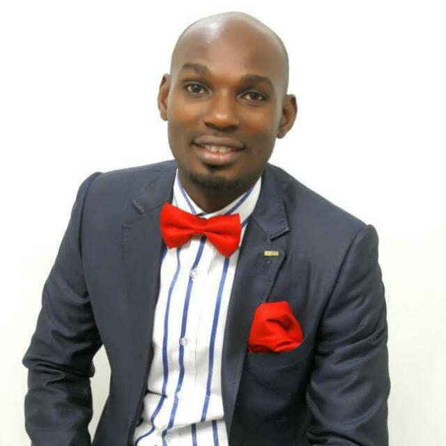

Ifeanyi David Emeaghara
Lead Pastor
Ifeanyi D. Emeaghara
Lead Pastor
Born on the 16th of March 1982, Ifeanyi David Emeaghara rededicated his life to Christ in 2005 under the ministry of Bishop David Oyedepo and straight away became fully involved in the affairs of the kingdom. Having served faithfully in Living Faith Church (LFC) aka Winners Chapel for a decade, he received the call from God to start Extraordinary Family Int'l Church which commenced on the 25th of December 2016 in Lagos, Nigeria. Pastor Ifeanyi was fully ordained and commissioned into full time pastoral ministry by Bishop David Oyedepo on the 25th of February 2017. He attended his primary/secondary education in Lagos and university education in Ogun State University now Olabisi Onabanjo University (OOU) where he studied Computer and Data Processing. He is married to Pastor Maryrose Ifeoma Emeaghara and they are blessed with three boys, David, Isreal & Michael.